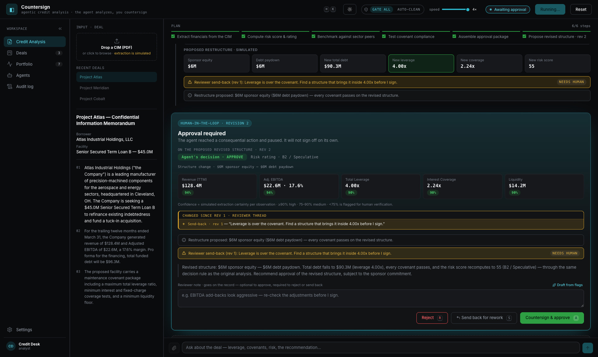
Case study · 2026
The agent analyzes, a human countersigns. A credit-analysis agent whose every step is watchable, and whose consequential call is a signature, never a default.
The bet
The gap between a fast approval and a slow one is the analysis: pull the figures, spread them, test each covenant, write the memo that defends the call. Most of that work is mechanical. None of the accountability is, because at the end a person signs. So the bet is not that a model can write the memo. It is that a person will sign what an agent prepared.
is enough for three in ten banks to clear a small and simple loan.
is what three in four banks take to approve their typical small business loan.
of financial institutions call AI explainability their most acute regulatory concern.
FDIC Small Business Lending Survey, 2024. Wolters Kluwer Banking Compliance AI Trend Report, 2026.
Overview · My role
Countersign runs one visible loop over a deal document: plan, act, observe, decide, stop. Every tool call shows its arguments and its evidence, and the loop suspends at the gate the product is named for. Designed and built solo, in real code, with a deliberately mocked backend, so the behavior itself is the design.
An async generator streaming typed events. The UI is a pure reduction of that stream, so a real model could sit behind the same components.
The loop suspends at the consequential call and cannot proceed until a person acts.
Analysis, deals pipeline, portfolio monitor, agent roster, and audit log, all reduced from the same events.
The token-driven design system. Light and dark are one attribute apart.
Insight
On a clean deal the agent's own recommendation is approve. The loop still stops. Every run, whatever the numbers say, parks at the same gate and waits for a person, because a countersignature is the second signature that makes a document binding, and the agent's memo is only ever the first. The goal was never to automate the decision. It was to make the work so inspectable that a person can sign it without redoing it.
breaches === 0 ? 'approve' : riskScore >= 75 ? 'decline' : 'escalate'
The entire decision rule, verbatim from the repo. One line, shared by the agent, the stress panel, and the restructure search, and no branch ends the run.
Insight · The decision rule
A breach blocks approval, and the risk score decides which kind of no. At 75 or higher the agent recommends against the deal outright. Below that, the deal is flawed but maybe fixable, so it hands the judgment to a person. Every exit is still only advice until the gate.
Why this is hard
Three constraints shaped every call that follows.
A mostly right answer with no working is a liability. Every figure has to point back to the page it came from, and every step has to leave a trail an auditor can replay.
Extraction is never uniformly confident, and the edge cases are where the risk lives. A critical flag has to change the agent's behavior, not just its color.
If approval is a dialog bolted on at the end, people click through it. The pause has to be structural: the loop itself stops, and nothing proceeds until a person acts.
Solution · The loop
You approve the planoptional steps can be excluded, and the approved composition goes on the record
→Plan
Nothing happens off screeneach tool call runs in the open, arguments in, data out, with a live timer
→Act
Evidence, not outputmetric cards, a risk gauge, covenant tests, each figure carrying its own confidence
→Observe
Flags change behaviora covenant breach cannot be auto-approved, so the recommendation flips to escalate
→Decide
The verb belongs to a personcountersign, amend, send back, or reject, every one of them on the record
→Countersign
Process
An agent's feel lives in its pacing: how reasoning streams, when a flag interrupts, what it is like to be asked for a decision mid flow. None of that survives a static mockup, so I designed by building, solo, in Claude Code. The backend is deliberately mocked and deterministic. Every number is fictional, the extraction is labeled simulated in the UI, and the same run replays identically. Every design question became something I could test by watching rather than argue by intuition.
Final design · 1 of 5Plan · Gate · Rework · What-if · Autonomy
Picking a deal no longer starts the run. It proposes the plan: required steps locked, optional steps yours to exclude, and a cancellable countdown for the unattended case. The composition you approve is stamped into the audit trail before the first tool fires.
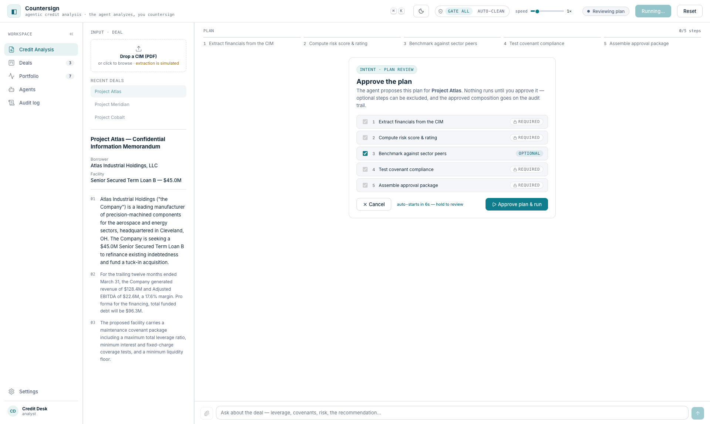
Final design · 1 of 5Plan · Gate · Rework · What-if · Autonomy
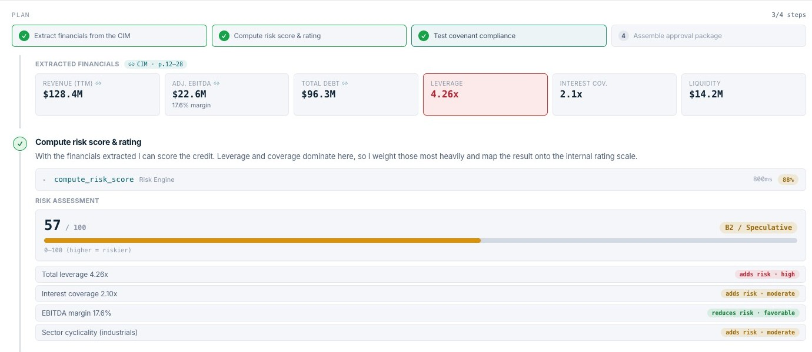
In the June build the run began the moment you picked a deal. The plan bar announced steps as they ran, but you could not touch it. The agent’s first act was a fait accompli, and the human’s first appearance came only at the end.
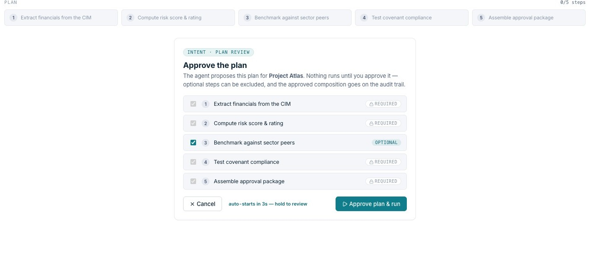
Now nothing runs until a person approves the plan as edited. Optional steps can be excluded, required steps are locked, and the unattended countdown logs itself as auto-started, so the trail never claims a human decision that did not happen.
Both columns are real builds: the left captured from the repo’s own git history, the right from today’s.
Final design · 2 of 5Plan · Gate · Rework · What-if · Autonomy
The agent’s decision is fixed on the filed figures. The human’s is more than a binary: countersign, amend the terms first, send it back, or reject. The reviewer note rides the decision into the memo, the banner, and the audit trail, optional to approve, required to refuse.
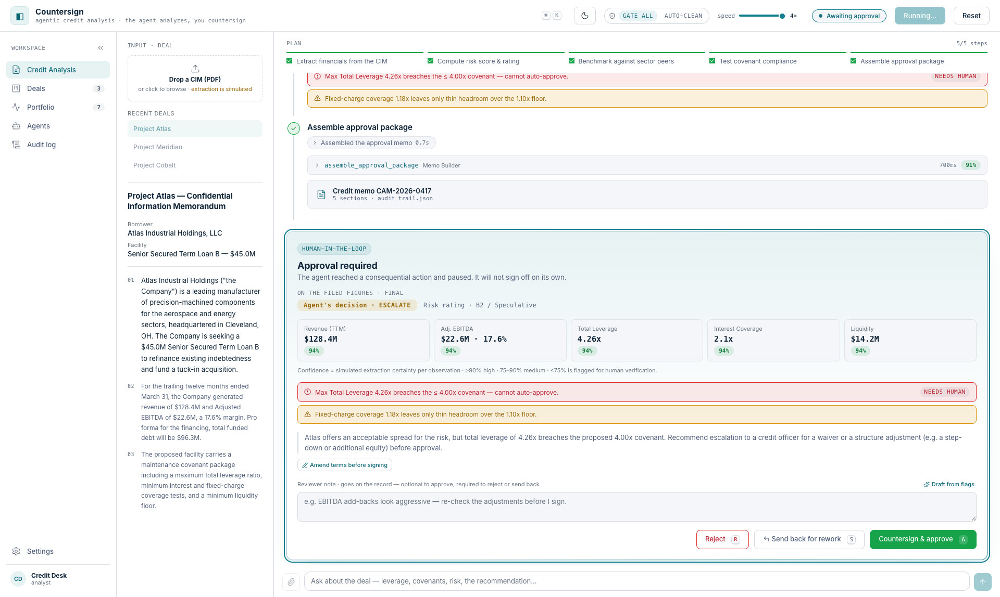
Final design · 2 of 5Plan · Gate · Rework · What-if · Autonomy
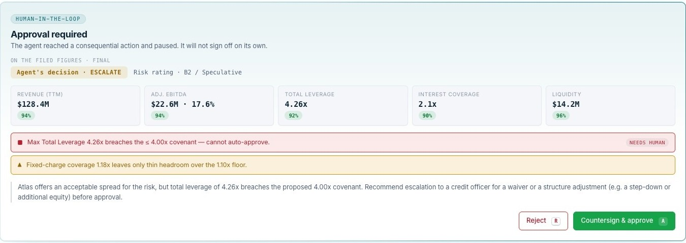
The gate had two buttons and no memory. Approve or reject, and either way the reviewer left nothing behind. The human was the least documented actor in a product whose whole argument is documentation.
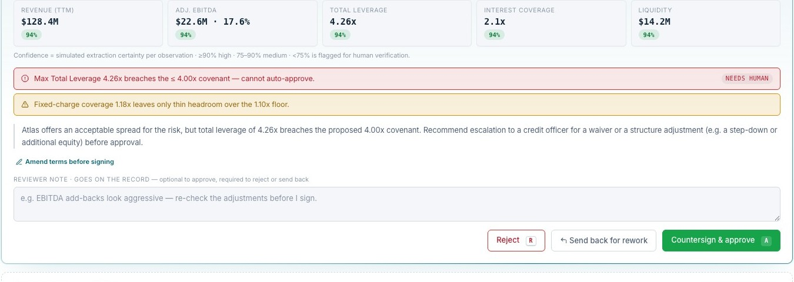
Every refusal now requires a reason: the note goes on the record, so a rejection cannot be blind. And amendments preview through the same decision rule before signing, so a waiver is a calculated act, not a hopeful one.
Final design · 3 of 5Plan · Gate · Rework · What-if · Autonomy
A send-back is authorization to try again within policy. The note becomes a tracked flag, a structuring engine searches for the smallest sponsor-equity cure that clears every covenant, and the loop re-parks on the revised figures as revision two, reviewer thread pinned above the numbers. On Atlas the cure lands leverage on exactly 4.00x. On Cobalt no cure exists inside policy, it says so, and the decline stands.
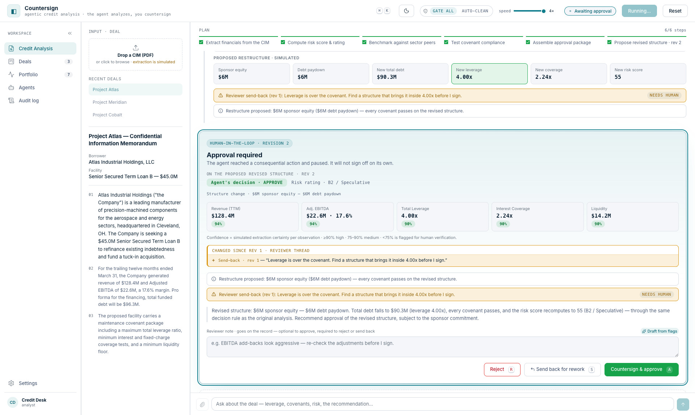
Final design · 3 of 5Plan · Gate · Rework · What-if · Autonomy
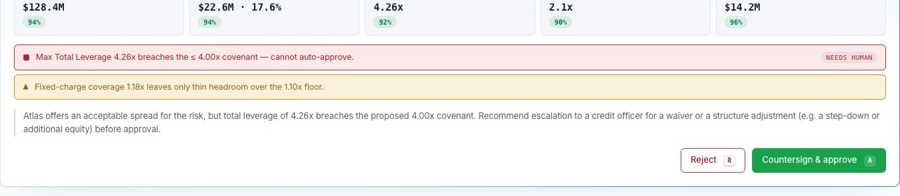
Reject was the only way to say no, and reject is terminal. A memo with a fixable flaw met the same fate as a genuinely bad deal: kill it, run again from zero, and lose the reviewer’s reasoning along the way.
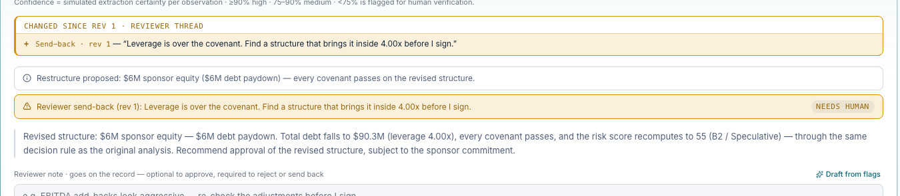
The third verb re-enters the loop instead of ending it. The work carries forward, the objection becomes an input, and the revision must pass the same one-line decide rule as the original analysis, so a cure can never be a special case.
Final design · 4 of 5Plan · Gate · Rework · What-if · Autonomy
Drag EBITDA, debt, rate, or liquidity and the covenants, risk, and recommendation recompute live through the same decide rule the agent runs, so the sandbox can never contradict the memo. Here Atlas flips from escalate to approve at plus $2.6M of EBITDA, and the scenario attaches to the audit trail.
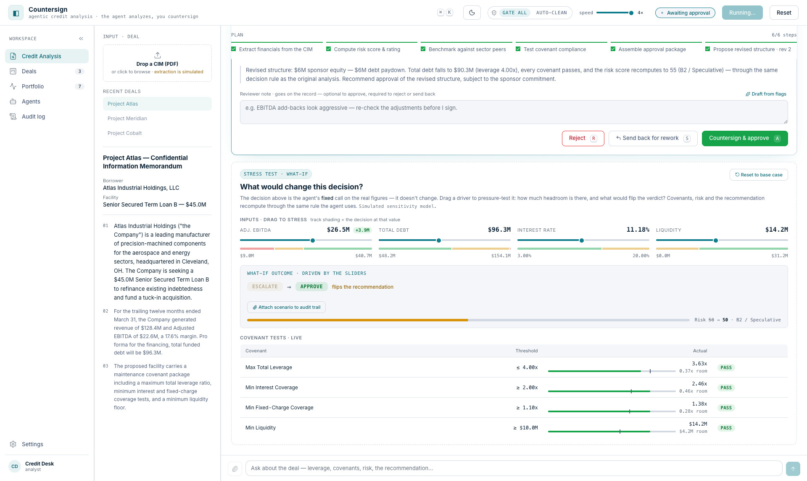
Final design · 4 of 5Plan · Gate · Rework · What-if · Autonomy
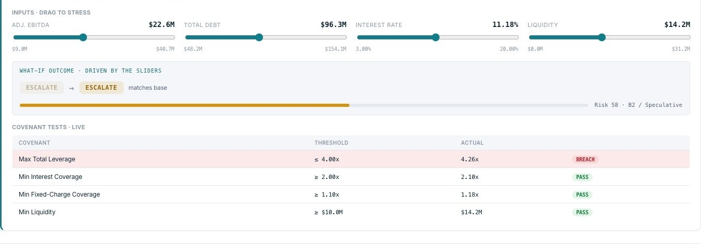
The first panel recomputed live, but the tracks were blank. You dragged blind, hunting for the flip point, and whatever you found evaporated when you left the screen. Sensitivity analysis with no memory.
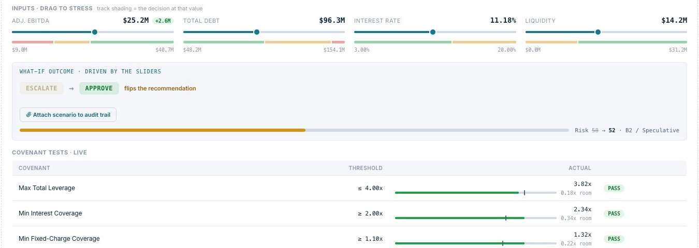
The track under each slider is painted with the decision at every value, so the boundary is visible before you touch it. Covenant rows grew headroom bars, and a scenario worth keeping attaches to the audit trail as a first-class entry.
Final design · 5 of 5Plan · Gate · Rework · What-if · Autonomy
A header dial decides what the agent may resolve without a click: gate all, the default, or auto-clean, which covers only a spotless first pass. Recommendation approve, zero flags, every confidence at ninety percent or higher. The countdown is visible, any engagement holds it, and breaches always hard-gate.
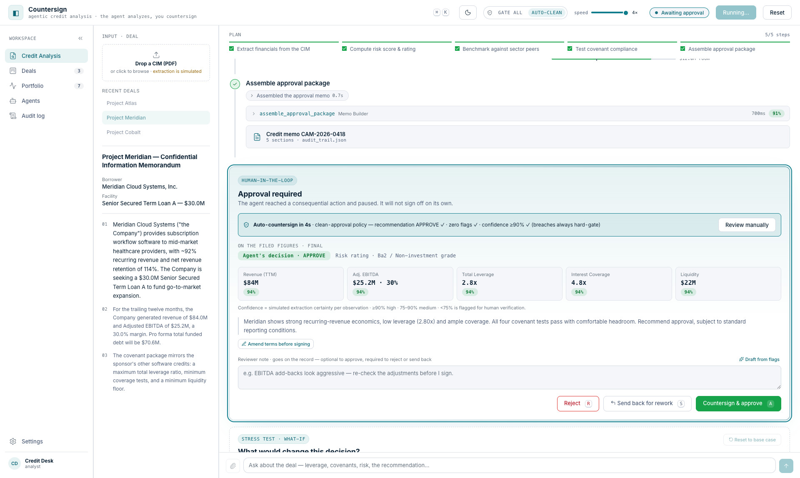
Final design · 5 of 5Plan · Gate · Rework · What-if · Autonomy
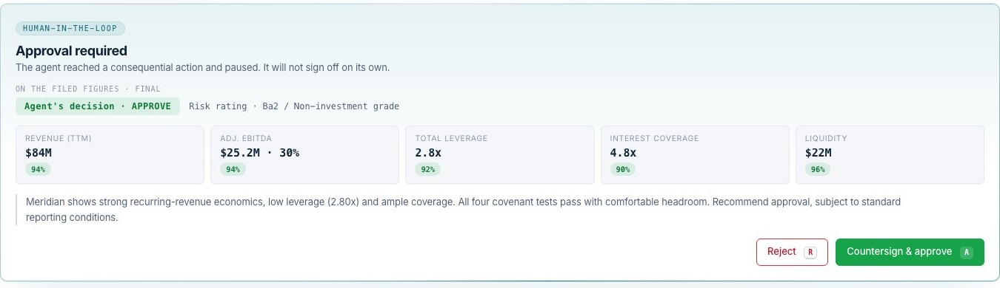
Every run gated identically, so a spotless first pass cost the same ceremony as a covenant breach. That is how gates die: when the hundredth clean click feels like ritual, people stop reading before they sign.
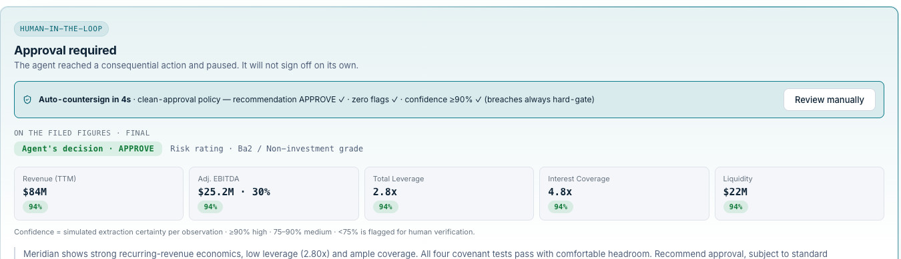
Autonomy became something a person grants, scoped to the runs where the gate had nothing to say. The signature reads auto, under policy, distinct from human ink, and one touch of any control takes the pen back.
Final design · The record
The memo closes with a signature block: prepared by the agent, countersigned by the human, with the revision and the structure change on the line between them. Approval draws real ink. An auto-countersigned run signs as /auto/ under policy instead, so the trail never confuses machine policy with a human hand.
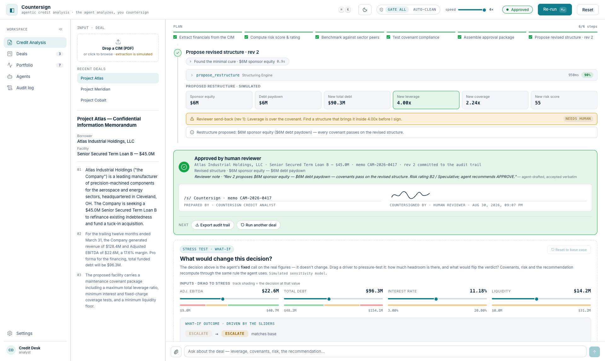
The always-on half
A monitoring agent sweeps the book on a cadence, re-tests every covenant against drifting figures, and raises escalations when a deal breaches or headroom runs thin. Each one waits for a person to acknowledge it, and a countersigned escalation routes here instead of evaporating.
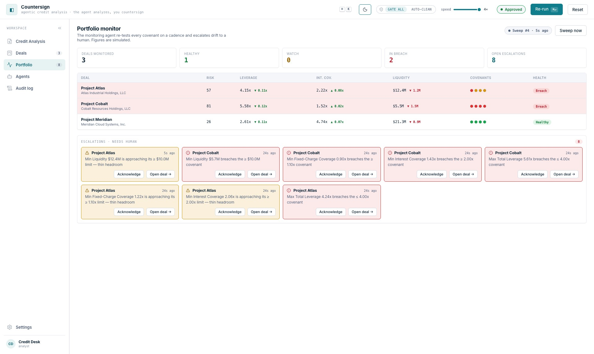
The record
Every event lands timestamped: tool arguments and results, flags, the approved plan, reviewer notes, attached what-if scenarios, and the decision itself, exportable as JSON. In this domain, it is the compliance artifact a fund would archive.
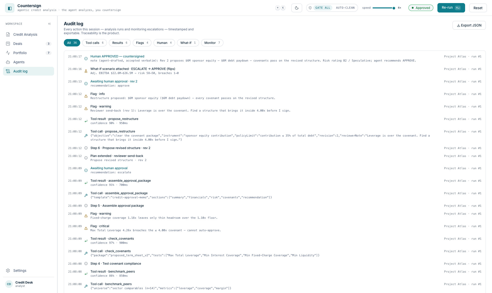
Outcome
The loop, the gate, the rework cure, the stress panel, and the monitor all run in the browser, no backend, no API keys. Every trust call in this deck is in there, running for real. Pick a deal, press run, and refuse to sign.
Design system
One deep teal accent over graphite-navy ink and cool neutral surfaces, hairlines and soft elevation instead of hard shadows. Teal is scarce and means live, active, or yours. Green, amber, and red carry pass, warn, and breach, and the two vocabularies never mix. The whole system ships as a machine-readable spec. Read DESIGN.md ↗
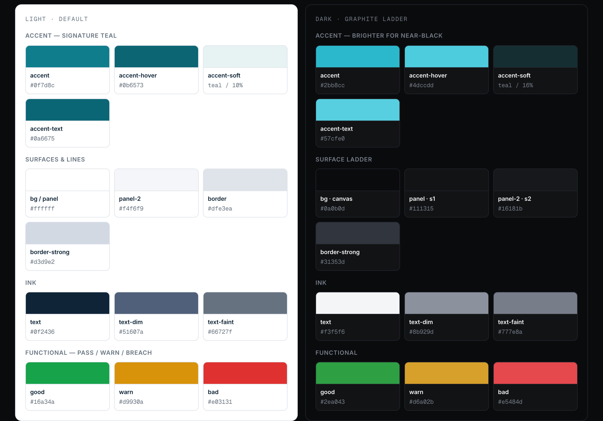
Design system · Type
Every number, eyebrow, and audit token renders in mono with tabular figures, so a leverage ratio, a confidence, and a memo ID line up like entries in a ledger, not words in a sentence. The board is the repo's own preview page, the system rendering itself in its own type.
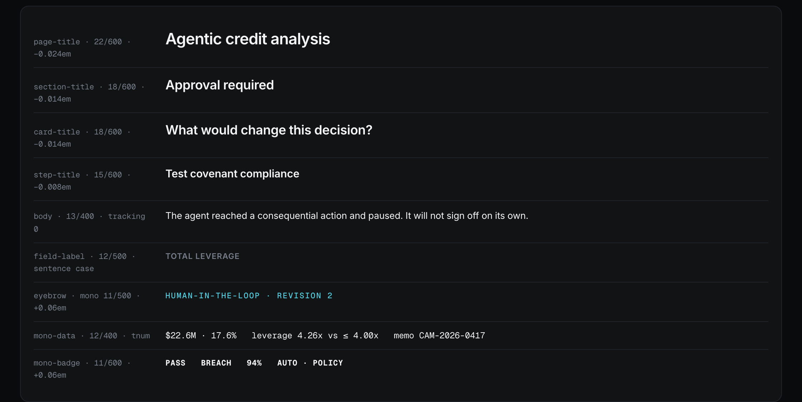
Design system · Components
Specimens with real product data, in both engines: metric tiles, plan chips, covenant headroom bars, the gate, and both signature blocks. A dashed hairline marks a sandbox, and one glow token in the whole system is reserved for the gate alone.
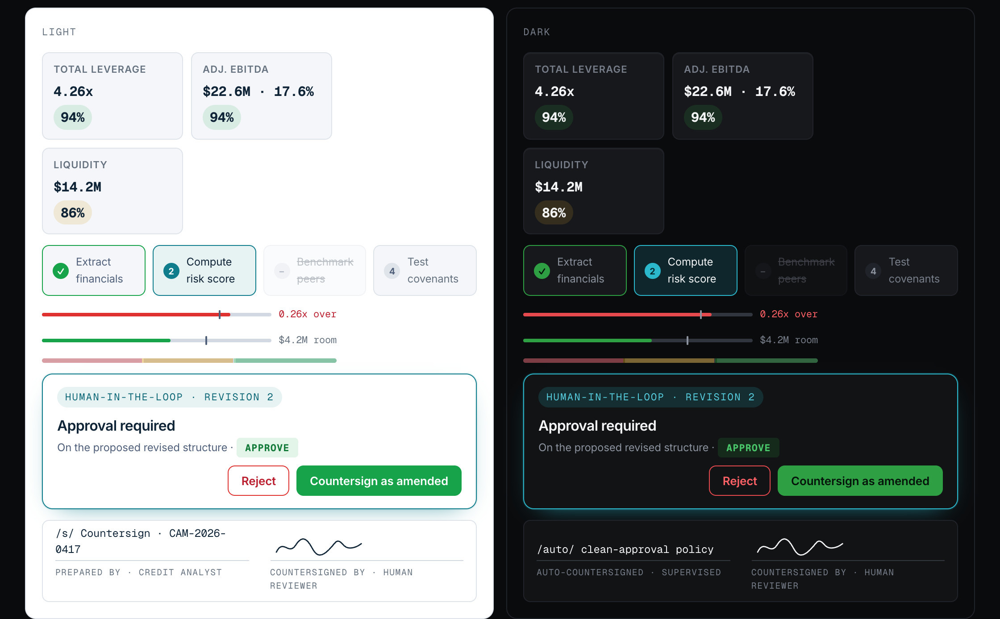
Design system · Theming
Every color resolves through a variable, so the whole product flips engines on one data attribute with zero component changes. Elements announce themselves once, then go still. The only thing allowed to keep moving is a genuinely live state, like the seam of a gate still waiting for you.
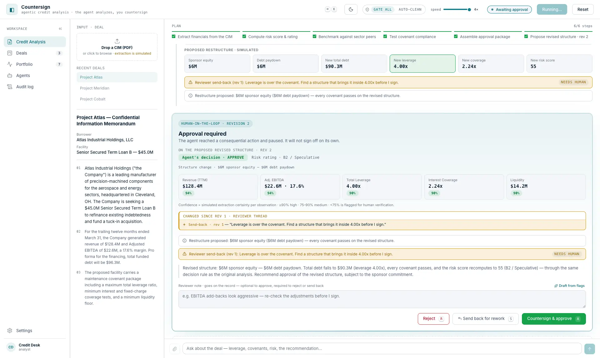
Reflection
Most agent design effort goes into making the thing act. What earned trust here was the opposite work: where it pauses, what it refuses to decide, how completely it shows its working, and now, when it may act alone. Timing does not exist on an artboard, so the only way to design any of it was to build it.
The gate, the flags, and the audit trail are the product. The analysis is what they are wrapped around.
Thank you